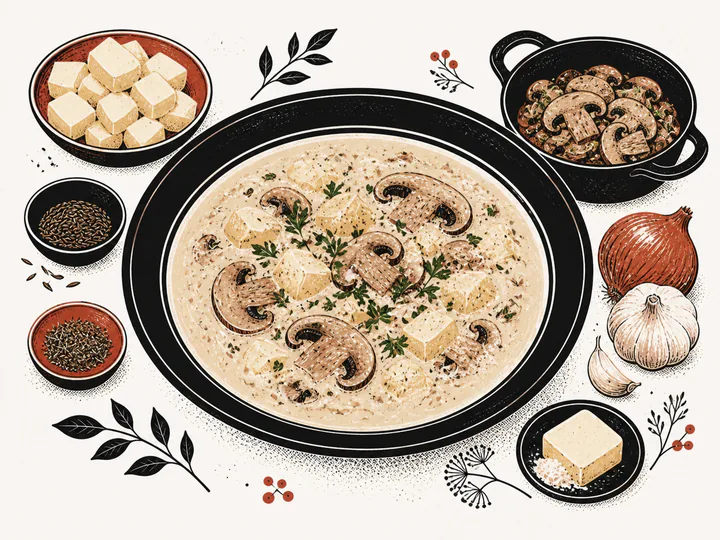
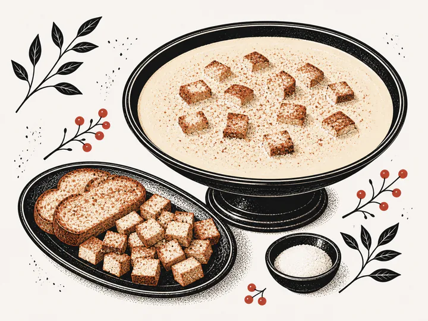
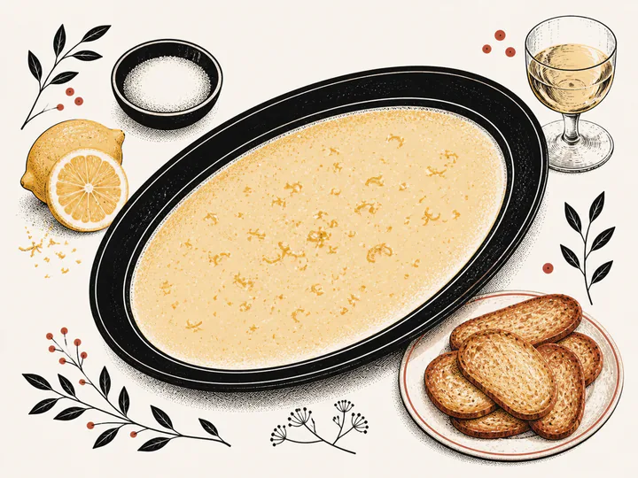

SoupsRecipe 064
Goulash soup · Gulášová polévka
Read recipe ↗
Layout study · Horizontal recipe cards with B. Running collection line · Not yet applied to the reader
7 recipes in Soups
SoupsRecipe 064

SoupsRecipe 065

SoupsRecipe 066

SoupsRecipe 067

SoupsRecipe 068

SoupsRecipe 069